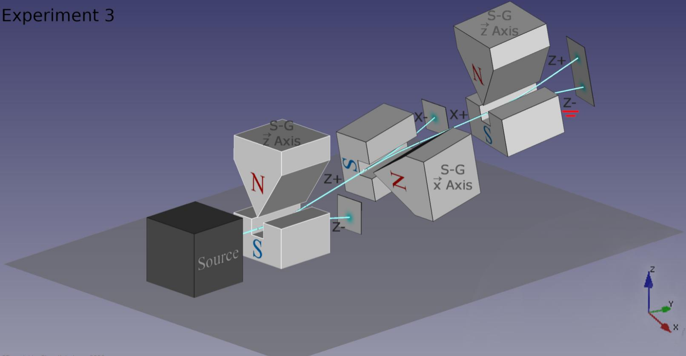
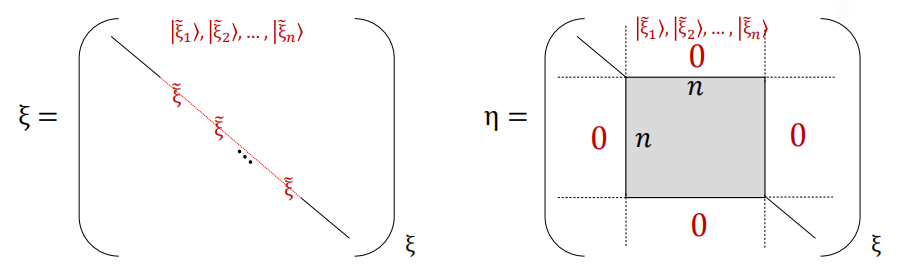
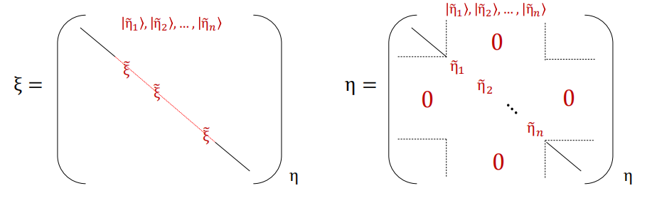

自旋
自旋的发现
实验中测得 S^z 的本征值为 ℏ/2 和 −ℏ/2，对应的本征态分别为 ∣↑⟩ 和 ∣↓⟩。使用投影算符可得任意方向 α 上的自旋算符为
S^α=2ℏ(∣↑⟩αα⟨↑∣−∣↓⟩αα⟨↓∣)
利用如下所示的 Stern-Gerlach 实验装置，我们可以知道，不能同时测量 S^x 和 S^z，因为测量 S^x 会使得 S^z 的值变得不确定，反之亦然。这就是 S^x 和 S^z 之间的不对易性。

复数的出现
在物理中我们认为 S^z 是一个可观测量，因此任意态都可以使用∣↑⟩ 和 ∣↓⟩ 线性展开。又由于 ∣↑⟩ 和 ∣↓⟩ 是等概率的，那么我们需要引入一个相因子去表示不同的概率幅。因此我们可以将 ∣↑⟩x 和 ∣↓⟩x 表示为
{∣↑⟩x∣↓⟩x=21(∣↑⟩+eiβ∣↓⟩)=21(∣↑⟩−eiβ∣↓⟩)
同理可得 ∣↑⟩y 和 ∣↓⟩y 的表达式
{∣↑⟩y∣↓⟩y=21(∣↑⟩+eiγ∣↓⟩)=21(∣↑⟩−eiγ∣↓⟩)
通过进一步计算可知，cos(β−γ)=0，因此我们可以选取 β=0，γ=2π，从而
将 S^x 和 S^y 的本征态表示为
{∣↑⟩x∣↓⟩x=21(∣↑⟩+∣↓⟩)=21(∣↑⟩−∣↓⟩)
{∣↑⟩y∣↓⟩y=21(∣↑⟩+i∣↓⟩)=21(∣↑⟩−i∣↓⟩)
自旋算符的矩阵表示
由于 S^z 的本征态 ∣↑⟩ 和 ∣↓⟩ 是完备归一的，因此有完备性关系和正交归一性
∣↑⟩⟨↑∣+∣↓⟩⟨↓∣=I
⟨↑∣↑⟩=⟨↓∣↓⟩=1,⟨↑∣↓⟩=⟨↓∣↑⟩=0
S^z 作用在 ∣↑⟩ 和 ∣↓⟩ 上的结果分别为
S^z∣↑⟩=2ℏ∣↑⟩S^z∣↓⟩=−2ℏ∣↓⟩
那么在基底 {∣↑⟩,∣↓⟩} 下，S^z 的矩阵表示为
S^z=˙(⟨↑∣S^z∣↑⟩⟨↓∣S^z∣↑⟩⟨↑∣S^z∣↓⟩⟨↓∣S^z∣↓⟩)=2ℏ(100−1)
- ∣↑⟩ 和 ∣↓⟩ 是 S^z 的本征态，因此 S^z 的矩阵表示是对角矩阵
- 注意：定义基底时，∣↑⟩ 和 ∣↓⟩ 的顺序不能颠倒，否则会影响后续计算
∣↑⟩ 和 ∣↓⟩ 的矩阵表示分别为
∣↑⟩=˙(⟨↑∣↑⟩⟨↓∣↑⟩)=(10)
∣↓⟩=˙(⟨↑∣↓⟩⟨↓∣↓⟩)=(01)
升降算符
我们定义升算符为
S^+∣↑⟩=ℏ∣↓⟩,S^+∣↓⟩=0
在基底 {∣↑⟩,∣↓⟩} 下，S^+ 的矩阵表示为
S^+=˙(⟨↑∣S^+∣↑⟩⟨↓∣S^+∣↑⟩⟨↑∣S^+∣↓⟩⟨↓∣S^+∣↓⟩)=(00ℏ0)
同理可定义降算符为
S^−∣↓⟩=ℏ∣↑⟩,S^−∣↑⟩=0
在基底 {∣↑⟩,∣↓⟩} 下，降算符的矩阵表示为
S^−=˙(⟨↑∣S^−∣↑⟩⟨↓∣S^−∣↑⟩⟨↑∣S^−∣↓⟩⟨↓∣S^−∣↓⟩)=(0ℏ00)
x、y 分量的自旋算符
S^x 可在自身表象投影为
S^x=2ℏ(∣↑⟩xx⟨↑∣−∣↓⟩xx⟨↓∣)
将 ∣↑⟩x 和 ∣↓⟩x 的表达式代入上式，并使用完备性关系化简，得到
S^x=2ℏ(∣↑⟩⟨↓∣+∣↓⟩⟨↑∣)=2ℏ(0110)
同理可得
S^y=2ℏ(−i∣↑⟩⟨↓∣+i∣↓⟩⟨↑∣)=2ℏ(0i−i0)
我们可以得到以下关系：
S^±=S^x±iS^y
S^x2=S^y2=S^z2=˙4ℏ2I
S^2=S^x2+S^y2+S^z2=˙43ℏ2I
泡利矩阵
定义泡利矩阵为
σx=(0110)σy=(0i−i0)σz=(100−1)
泡利矩阵没有量纲，而自旋算符和普朗克常量具有角动量的量纲
那么自旋算符可写为
S^i=2ℏσi(i=x,y,z)
泡利矩阵具有如下性质
- σi2=I
- {σi,σj}=2δijI
- [σi,σj]=2iϵijkσk
- σiσj=iϵijkσk+δijI
- det(σi)=−1 and Tr(σi)=0
定理：对于任意的矢量 a=(a1,a2,a3)，有
(a⋅σ)2=aiσi=(a3a1+ia2a1−ia2−a3)2
det(a⋅σ)=−a32−(a12+a22)=−∣a∣2
定理：任意一个二维矩阵都可以写做单位矩阵和三个泡利算符的线性组合
M=c0I+c1σx+c2σy+c3σz
定理：如果 A 和 B 都和泡利矩阵对易，那么有
(σ⋅A)(σ⋅B)=A⋅B+iσ⋅(A×B)
当 A=B 时，有
(σ⋅A)2=A⋅A+iσ⋅(A×A)
如果 A 是一个经典矢量，那么 A×A=0，因此
(σ⋅A)2=∣A∣2
定理：不存在与三个泡利矩阵都反对易的 2×2 矩阵
自旋算符的球坐标分量算符
定理球坐标下的单位向量为 n^=(sinθcosϕ,sinθsinϕ,cosθ)，则自旋算符在 n^ 方向的分量为
S^⋅n^=2ℏσ⋅n^=S^xsinθcosϕ+S^ysinθsinϕ+S^zcosθ=2ℏ(cosθsinθeiϕsinθe−iϕ−cosθ)
由于 (σ⋅n^)2=I，满足一个代数方程，(σ⋅n^) 的本征值为 ±1，对应的本征态分别为
∣↑⟩n=cos2θsin2θeiϕ∣↓⟩n=sin2θ−cos2θeiϕ
再考虑 −n^=(−sinθcosϕ,−sinθsinϕ,−cosθ)=(sin(π−θ)cos(ϕ+π),sin(π−θ)sin(ϕ+π),cos(π−θ)) 方向的自旋算符分量，同样可以得到本征态
∣↑⟩−n=sin2θ−cos2θeiϕ∣↓⟩−n=cos2θsin2θeiϕ
可以看出∣↑⟩−n=∣↓⟩n，∣↓⟩−n=∣↑⟩n。这是很自然的结果，与我们对反向的理解是一致的。
再考虑任意两个方向的单位矢量 n^ 和 m^，有
∣n⟨↑∣↑⟩m∣=21(1+n^⋅m^)
定理：
e−2iα(σ⋅n^)=cos2αI−isin2α(σ⋅n^)
对易性和不确定性
共同本征态
定理：如果两个可观测量 A^ 和 B^ 对易，即 [A^,B^]=0，且 A^ 的本征值是非简并的，那么矩阵元 ⟨a′∣B^∣a⟩ 是对角的。因此在基底 {∣a⟩} 下，A^ 和 B^ 都是对角矩阵，且 ∣a⟩ 同时是 A^ 和 B^ 的本征态。
注意：B^ 的本征值可以是简并的，这时需要 A^ 的不同本征值区分简并本征态。
但反过来，当 A^ 的本征值是简并的时，B^ 的矩阵是块对角化的，如下图所示

图中红色的 ξ~ 表示 ξ^ 的对应于同一本征值的简并本征态所构成的子空间。而灰色的 η~ 则表示 η^ 在该子空间内的矩阵。由于 ξ^ 的本征值是简并的，因此 η~ 可能不是对角矩阵，也就是说我们不清楚灰色块内的矩阵元是否为零。这时需要对 η~ 进行对角化，才能区分 η^ 的简并本征态，将 ∣η~⟩ 重新由 ∣ξ~⟩ 组合
∣η~i⟩=j∑cij∣ξ~j⟩
ηi~∣η~i⟩=ηi~j∑cij∣ξ~j⟩=j∑cijη^∣ξ~j⟩=j∑cijη~jk∣ξ~k⟩
因此 ηi~ 就是 ξ^ 的本征值，对角化后的 η 矩阵如下图所示，并得到以下定理

定理：有限维希尔伯特空间内两个对易的可观测量总是可以同时对角化。
如果对角化后的 ∣η~i⟩ 仍然是简并的，那么在原则上可寻找第三个与 ξ^ 和 η^ 都对易的可观测量 ζ^，并在该表象下三个量都对角化，从而区分简并本征态。如此继续下去，直到所有的简并都被区分开为止。
定理：若两个可观测量 A^ 和 B^ 对易，那么他们的共同本征态集 {∣a,b⟩} 张成一个完备基。
定理：若存在 n 个两两对易的可观测量 A^1,A^2,⋯,A^n，那么可以建立一个表象，该表象由 A^1,A^2,⋯,A^n 的完备的共同本征态集 {∣a1,a2,⋯,an⟩} 组成。
不确定性关系
对于一个给定的可观测量 A，我们定义一个厄米算符 ΔA^ 为
ΔA^=A^−⟨A⟩I
其中 ⟨A⟩=⟨ψ∣A^∣ψ⟩ 为特定态的平均值。再考虑 (ΔA^)2 的期望值
⟨(ΔA)2⟩=⟨A2⟩+⟨A⟩2−2⟨A⟩⟨A⟩⟨A2⟩−⟨A⟩2
这就是 A 的方差或者均方偏差。特别地，当 ∣ψ⟩=∣a⟩ 是 A^ 的本征态时，⟨(ΔA)2⟩=0。
不确定性关系：对于两个可观测量 A、 B和任意态 ∣ψ⟩，有以下不等式成立
⟨(ΔA)2(ΔB)2⟩≥41⟨[A^,B^]⟩2
当 ΔA^∣ψ⟩=C ΔB^∣ψ⟩ 且 C 为纯虚数时，不等式取等号。
连续谱
假设 {∣α⟩} 是 A^ 的完备连续本征态集，那么可以构造任意两个态 ∣Ψ⟩ 和 ∣Φ⟩
∣Ψ⟩=∫dα Ψ(α)∣α⟩∣Φ⟩=∫dα Φ(α)∣α⟩
对两个态做内积
⟨Ψ∣Φ⟩=∫dα′∫dαΨ∗(α′)Φ(α)⟨α′∣α⟩
根据正交性，若 ⟨α′∣α⟩<∞，则 ⟨Ψ∣Φ⟩=0，因此 ⟨α′∣α⟩ 不能是 Kronecker delta 函数 δα′α，而只能将其定义为 Dirac delta 函数 ⟨α′∣α⟩=δ(α′−α)。
我们只考虑非简并的单个可观测量的连续谱，由于其内积无穷大，因此我们无法将其归一化为 1。对于一个任意态，将其通过Dirac函数构造
∣α⟩=∫dα′δ(α′−α)∣α′⟩=∫dα′⟨α′∣α⟩∣α′⟩
因此我们得到完备性关系
∫dα ∣α⟩⟨α∣=1
对于一个已归一化的态，可以将其展开为
∣Ψ⟩=∫dα ∣α⟩⟨α∣Ψ⟩
将其与自身做内积并根据归一化条件得
⟨Ψ∣Ψ⟩=∫dα∫dα′⟨Ψ∣α⟩⟨α∣α′⟩⟨α′∣Ψ⟩=∫dα ⟨α∣Ψ⟩2=1
⟨α∣Ψ⟩2dα 就是 A 在小范围 α+dα 内的概率。
再考虑任意可观测量的一个函数 f(A^)，有
⟨α∣f(A^)∣α′⟩=f(α)δ(α−α′)
由于 {∣α⟩} 是 A^ 的本征态，因此连续谱的对角矩阵中对角元为 f(α)δ(α−α′)